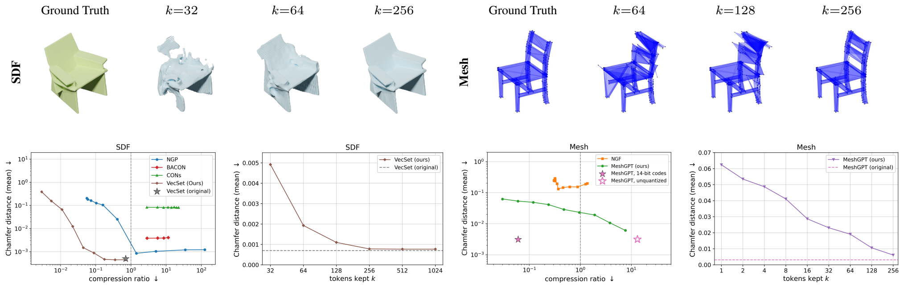
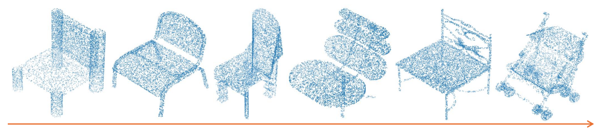

Method

Compressing 3D shapes is important for the efficiency of many applications, yet existing methods either cannot leverage dataset-level statistics or use a fixed compression ratio for all shapes. We propose a learned variable-length compression method that exploits structure across a training dataset while adapting compressed representation size to individual shape complexity using only fast feed-forward inference. Our method operates on general latent representations and improves rate–distortion for both meshes and signed distance fields.

